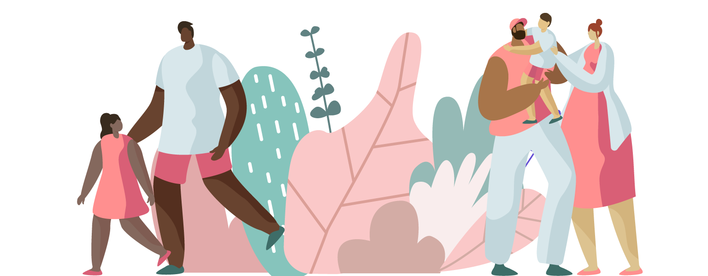
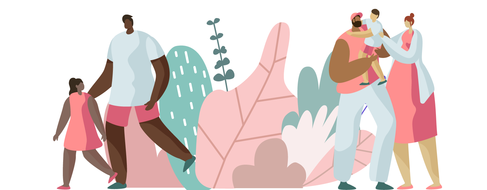

Nurture Sprouts
 Check-out Our Free Assessments
Check-out Our Free Assessments

Sleep

Eat

Behaviour
Mindfulness
Select Age
physical Development Qestionnaire
Go
 Psychological Councelling
we provide Psychological Counselling
Helps people with physical, emotional and mental
health issues improve their sense of well‐being,
alleviate feelings of distress and resolve crises.

Parental Councelling
we provide Parental Counselling
aims to provide the necessary knowledge, tools,
guidance, and most especially support to parents
without bias or judgment. This way, they become
more fully equipped to take care of their children.
Career Councelling
we provide Career Counselling
helps students choose the right course and career
path for themselves
Teacher Training
we train Teachers for better performance
the process of teaching the knowledge, skills, and
attitudes you need to be a teacher in an educational
setting
Psychological Councelling
we provide Psychological Counselling
Helps people with physical, emotional and mental
health issues improve their sense of well‐being,
alleviate feelings of distress and resolve crises.

Parental Councelling
we provide Parental Counselling
aims to provide the necessary knowledge, tools,
guidance, and most especially support to parents
without bias or judgment. This way, they become
more fully equipped to take care of their children.
Career Councelling
we provide Career Counselling
helps students choose the right course and career
path for themselves
Teacher Training
we train Teachers for better performance
the process of teaching the knowledge, skills, and
attitudes you need to be a teacher in an educational
setting